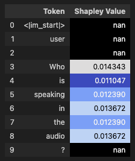
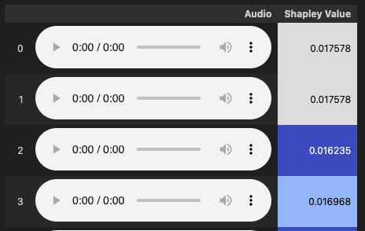

Welcome to MLLM-SHAP#
MLLM-SHAP is a Python package designed to interpret the predictions of large language models (LLMs) using SHAP (SHapley Additive exPlanations) values. It helps you understand the contribution of input features to model outputs, enabling transparent and explainable AI workflows.
✨ Key Features#
Integration with audio and text models, supporting multi-modal inputs and outputs.
Flexible aggregation strategies: mean, sum, max, min, etc.
Multiple similarity metrics (cosine, euclidean, etc.) for embedding analysis.
Customizable SHAP calculation algorithms: exact, Monte Carlo approximations, and more.
Examples showcasing common explainability pipelines in
examples/on the official GitHub repository.
📊 Visualization & Examples#
If you’re interested in GUI visualization of SHAP values, check out the section Extension - GUI Visualization in the docs.
For more advanced CLI usages, refer to:
Or explore more advanced pipelines from exemplary research projects
🤖 Supported LLM Integrations#
Important Links#
Getting Started#
Installation#
pip install mllm-shap
Basic Text Usage#
Following example demonstrates how to use MLLM-SHAP to explain text generation from a Liquid-Audio model. It features just one user question (2 turns, including system prompt), and calculates SHAP values for user input tokens only, excluding punctuation tokens. Monte Carlo SHAP with minimal number of samples is used for fast approximation of SHAP values (not applicable for production use cases, only for demonstration purposes). Most of commented objects are just to showcase available options, they are not strictly necessary.
import torch
from audio_shap.connectors import LiquidAudio, ModelConfig
from audio_shap.connectors.enums import Role, SystemRolesSetup, ModelHistoryTrackingMode
from audio_shap.connectors.filters import ExcludePunctuationTokensFilter
from audio_shap.shap import Explainer, MCSHAPExplainer
from audio_shap.shap.enums import Mode
from audio_shap.shap.embeddings import MeanReducer
from audio_shap.shap.similarity import CosineSimilarity
from audio_shap.shap.normalizers import PowerShiftNormalizer
from audio_shap.utils.jupyter import display_shap_colors_df
# set device and generation parameters
device = torch.device("mps") if torch.backends.mps.is_available() else torch.device("cpu") # use GPU if available
# limit generation to 64 tokens with low temperature
generation_kwargs = {"max_new_tokens": 64, "model_config": ModelConfig(text_temperature=0.2)}
# load model and setup explainer
model = LiquidAudio(device=device, history_tracking_mode=ModelHistoryTrackingMode.TEXT) # track and generate only text history
shap = MCSHAPExplainer(
num_samples=-1, # minimal number of samples for Monte Carlo SHAP (one vs all, linear complexity, very poor approximation)
mode=Mode.CONTEXTUAL, # use contextual embeddings, default
embedding_reducer=MeanReducer(), # use mean pooling to reduce token embeddings to single embedding per audio, default
similarity_measure=CosineSimilarity(), # use cosine similarity to compare embeddings, default
normalizer=PowerShiftNormalizer(power=2.0), # use power-shift normalization with power of 2.0
)
explainer = Explainer(model=model, shap_explainer=shap)
# define chat
chat = model.get_new_chat(
system_roles_setup=SystemRolesSetup.SYSTEM_ASSISTANT, # don't calculate SHAP for system and assistant messages
token_filter=ExcludePunctuationTokensFilter(), # exclude punctuation tokens from shapley values calculation
)
# add one system turn
chat.new_turn(Role.SYSTEM)
chat.add_text("You are a helpful assistant that answers questions briefly.")
chat.end_turn()
# add one user turn
chat.new_turn(Role.USER)
chat.add_text("Who are you?")
chat.end_turn()
# run explainer
result = explainer(
chat=chat,
verbose=True, # save full history in result.history object
generation_kwargs=generation_kwargs,
progress_bar=True, # show progress bar during generation, default
)
# extract results
explained_chat = result.full_chat
explained_chat_conversation = explained_chat.get_conversation()
user_entry = explained_chat_conversation[1][0] # extract user entry
# display results
display_shap_colors_df(pd.DataFrame(list(zip(user_entry.content, user_entry.shap_values, user_entry.roles)), columns=["Token", "Shapley Value", "Role"]))
This will produce an output similar to the following:
{kind=link}

Chat messages can be accessed in the following way:
from pprint import pprint
pprint(chat.get_conversation())
This gives list of turns, each turn has list of messages - ChatEntry objects. Each ChatEntry contains content_type (audio / text), roles (for each token), SHAP values (if has been calculated), and content - list of strings (text) or bytes (audio), each entry corresponding to one token. All results are returned in same order as input messages / model outputs. Result of the following code will be:
[[ChatEntry(content_type=0,
roles=[2, 2, 2, 2, 2, 2, 2, 2, 2, 2, 2, 2, 2, 2, 2],
content='<|im_start|>, system, \n, You, are, a, helpful, assistant, that, answers, questions, briefly...',
shap_values=None)],
[ChatEntry(content_type=0,
roles=[2, 2, 2, 0, 0, 0, 0, 2, 2],
content='<|im_start|>, user, \n, Who, are, you, ?, <|im_end|>, \n',
shap_values=None)]]
We can display each turn in prettier way (it is a method of EntryChat object, won’t display SHAP values though):
explained_chat_conversation[1][0].display()
<|im_start|> user
Who are you? <|im_end|>
Working with Audio#
Please refer to the notebook in the official GitHub repository for a complete example of explaining audio inputs and outputs using MLLM-SHAP. Most crushial changes to example above are related to loading audio files, adding audio tokens to chat, and setting up generation parameters for audio models:
from audio_shap.utils.audio import display_audio
from audio_shap.utils.jupyter import display_shap_colors_df_audio
# load audio file
model = LiquidAudio(device=device, history_tracking_mode=ModelHistoryTrackingMode.AUDIO) # track and generate only audio history
# it can be also set to TEXT_AUDIO for tracking both text and audio history. Note
# that this settings corresponds to what model generates, not what is it inputted to it.
...
# add turn of 2 messages - text and audio
chat.new_turn(Role.USER)
chat.add_text("Who is speaking in the audio?")
chat.add_audio(sample_entry["audio__male"][0])
chat.end_turn()
Printed conversation differs when feed with audio (here for text input, audio output only conversation, different to previous example):
pprint(chat.get_conversation())
[[ChatEntry(content_type=0,
roles=[2, 2, 2, 2, 2, 2, 2, 2, 2, 2, 2, 2, 2, 2, 2],
content='<|im_start|>, system, \n, You, are, a, helpful, assistant, that, answers, questions, briefly...',
shap_values=[nan, nan, nan, nan, nan, nan, nan, nan, nan, nan, nan, nan, nan, nan, nan])],
[ChatEntry(content_type=0,
roles=[2, 2, 2, 0, 0, 0, 0, 2, 2],
content='<|im_start|>, user, \n, Who, are, you, ?, <|im_end|>, \n',
shap_values=[nan, nan, nan, 0.3125, 0.376953125, 0.3125, nan, nan, nan])],
[ChatEntry(content_type=0,
roles=[2, 2, 2],
content='<|im_start|>, assistant, \n',
shap_values=[nan, nan, nan]),
ChatEntry(content_type=1,
roles=[1, 1, 1, 1, 1, 1, 1, 1, 1, 1, 1, 1, 1, 1, 1, 1, 1, 1, 1, 1],
content='Audio bytes of total length 24624',
shap_values=[nan, nan, nan, nan, nan, nan, nan, nan, nan, nan, nan, nan, nan, nan, nan, nan, nan, nan, nan, nan]),
ChatEntry(content_type=0,
roles=[2, 2],
content='<|im_end|>, \n',
shap_values=[nan, nan])]]
Audio is not displayed directly in terminal, but can be played in Jupyter notebooks using:
audio_to_explain = explained_chat_conversation[2][1]
display_shap_colors_df_audio(pd.DataFrame(
list(zip(audio_to_explain.content, audio_to_explain.shap_values)),
columns=["Audio", "Shapley Value"]
))
This will render pandas dataframe with audio players for each token, similar to:
{kind=link}

Note that each row corresponds to one audio token, therefore recording lengths are very short and might not make much sense individually, as many models decode single tokens different to sequence of the same tokens decoded together. Still, SHAP values indicate contribution of each token to the final model output.
Extension - GUI Visualization#
# TODO